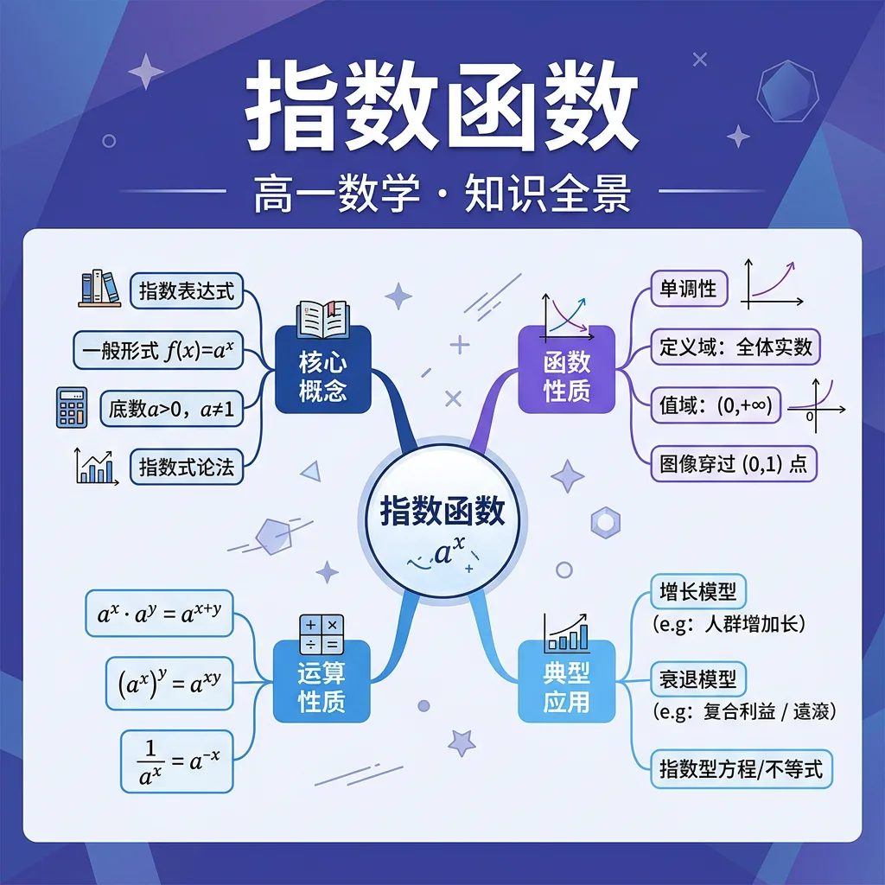

指数函数——高中数学核心知识

能用自己的语言解释指数函数的核心概念和定义
能运用指数函数y=aˣ的图像解决具体问题
能在新情境中灵活应用指数函数的知识
你正在学习指数函数，需要掌握其核心概念和方法
💡 本课的前置知识：函数的单调性、奇偶性、周期性
关于"指数幂的运算法则"，下列说法正确的是？
And 你已经掌握了基本的数学概念
But 仅凭已有知识，无法深入理解指数幂的运算法则的内涵与应用
Therefore 所以学习指数幂的运算法则——掌握其定义、方法和应用
指数幂的运算法则是指数函数中的重要内容。
详见课本相关章节的详细定义和推导过程。
注意审题，仔细计算，检查每一步
关于"指数幂的运算法则"，下列说法正确的是？
And 你已经掌握了指数幂的运算法则
But 仅凭已有知识，无法深入理解指数函数y=aˣ的图像的内涵与应用
Therefore 所以学习指数函数y=aˣ的图像——掌握其定义、方法和应用
指数函数y=aˣ的图像是指数函数中的重要内容。
详见课本相关章节的详细定义和推导过程。
注意审题，仔细计算，检查每一步
关于"指数函数y=aˣ的图像"，下列说法正确的是？
And 你已经掌握了指数函数y=aˣ的图像
But 仅凭已有知识，无法深入理解底数a对图像的影响的内涵与应用
Therefore 所以学习底数a对图像的影响——掌握其定义、方法和应用
底数a对图像的影响是指数函数中的重要内容。
详见课本相关章节的详细定义和推导过程。
注意审题，仔细计算，检查每一步
关于"底数a对图像的影响"，下列说法正确的是？
And 你已经掌握了底数a对图像的影响
But 仅凭已有知识，无法深入理解指数函数的单调性的内涵与应用
Therefore 所以学习指数函数的单调性——掌握其定义、方法和应用
指数函数的单调性是指数函数中的重要内容。
详见课本相关章节的详细定义和推导过程。
注意审题，仔细计算，检查每一步
关于"指数函数的单调性"，下列说法正确的是？
拖动滑块观察变化 · y = aˣ
回顾本课核心概念，用自己的话总结指数函数的定义和关键性质。
选择一个真实场景，运用指数函数的知识建立模型并分析。
设计一道关于指数函数的原创综合题，要求融合至少两个关键概念，并给出详细解答。
关于"指数函数的单调性"，下列说法正确的是？
用指数函数的知识解决一个实际问题，写出完整的解题过程。
指数幂的运算法则的常见错误：注意审题，仔细计算，检查每一步
指数函数y=aˣ的图像的常见错误：注意审题，仔细计算，检查每一步
底数a对图像的影响的常见错误：注意审题，仔细计算，检查每一步
指数函数的单调性的常见错误：注意审题，仔细计算，检查每一步
指数函数是数学中一种重要的函数类型，其一般形式为 y = a^x，其中 a 是底数，x 是指数，a > 0 且 a ≠ 1。指数函数的定义域为全体实数，值域为正实数。例如，y = 2^x 就是一个典型的指数函数，当 x = 0 时，y = 1；当 x = 1 时，y = 2；当 x = -1 时，y = 0.5。指数函数在现实生活中有着广泛的应用，比如人口增长、细菌繁殖、放射性衰变等都可以用指数函数来描述。理解指数函数的定义是学习后续内容的基础。
指数函数的图像是一条平滑的曲线，其形状取决于底数 a 的大小。当 a > 1 时，函数图像从左向右逐渐上升，表现为增长趋势；当 0 < a < 1 时，函数图像从左向右逐渐下降，表现为衰减趋势。例如，y = 2^x 的图像是一条上升的曲线，而 y = (1/2)^x 的图像是一条下降的曲线。指数函数具有以下性质：1. 函数值始终为正；2. 函数图像经过点 (0,1)；3. 函数在定义域内单调递增或单调递减。这些性质在解决实际问题时非常重要。
指数函数的运算规则包括同底数幂的乘法、除法、幂的乘方等。例如，a^m * a^n = a^(m+n)，(a^m)^n = a^(m*n)，a^m / a^n = a^(m-n)。这些规则在简化表达式和求解方程时非常有用。例如，计算 2^3 * 2^4 可以直接使用乘法规则得到 2^(3+4) = 2^7 = 128。再比如，求解方程 3^(2x) = 81，可以将 81 表示为 3^4，从而得到 2x = 4，解得 x = 2。掌握这些运算规则是解决指数函数相关问题的关键。
指数函数和对数函数是互为反函数的关系。如果 y = a^x，那么 x = log_a y。例如，如果 y = 10^x，那么 x = log_10 y。这种关系在解决指数方程和对数方程时非常有用。例如，求解方程 10^x = 1000，可以转化为 x = log_10 1000 = 3。再比如，求解方程 log_2 x = 5，可以转化为 x = 2^5 = 32。理解指数函数和对数函数的关系，可以帮助我们更灵活地处理相关问题。
指数函数在现实生活中有许多应用，比如人口增长模型、细菌繁殖模型、放射性衰变模型等。例如，人口增长可以用 y = y0 * e^(kt) 来描述，其中 y0 是初始人口，k 是增长率，t 是时间。再比如，细菌繁殖可以用 y = y0 * 2^(t/d) 来描述，其中 y0 是初始细菌数量，d 是繁殖周期。放射性衰变可以用 y = y0 * (1/2)^(t/h) 来描述，其中 y0 是初始放射性物质数量，h 是半衰期。这些应用展示了指数函数在描述自然现象中的重要性。
指数函数可以与其他函数复合，或者通过平移、伸缩等变换得到新的函数。例如，y = e^(x^2) 是一个复合函数，y = 2^(x+1) 是 y = 2^x 向左平移 1 个单位的结果，y = 3 * 2^x 是 y = 2^x 纵向伸缩 3 倍的结果。这些变换可以帮助我们更好地理解函数的性质和行为。例如，y = e^(-x^2) 是一个高斯函数，在概率统计中有重要应用。理解这些变换对于解决复杂问题非常有帮助。
指数函数在定义域内是连续的，并且具有一些重要的极限性质。例如，当 x → +∞ 时，a^x → +∞（a > 1）或 a^x → 0（0 < a < 1）；当 x → -∞ 时，a^x → 0（a > 1）或 a^x → +∞（0 < a < 1）。这些性质在分析函数的渐进行为时非常有用。例如，求解极限 lim (x→+∞) (1 + 1/x)^x = e，这是一个重要的极限结果。理解这些极限性质对于学习微积分和其他高级数学内容至关重要。
指数函数的导数和积分在微积分中有重要地位。例如，d/dx (e^x) = e^x，这是唯一一个导数等于自身的函数。再比如，∫ e^x dx = e^x + C。对于一般的指数函数 a^x，其导数为 d/dx (a^x) = a^x * ln a，积分为 ∫ a^x dx = a^x / ln a + C。这些结果在求解微分方程和积分问题时非常有用。例如，求解微分方程 dy/dx = y，可以得到 y = C * e^x。理解这些导数与积分的性质对于深入学习数学至关重要。
1. 什么是指数函数？请举例说明。2. 指数函数的图像有什么特点？3. 指数函数和对数函数有什么关系？
1. 计算 2^3 * 2^4 的值。2. 求解方程 3^x = 27。3. 描述指数函数在人口增长模型中的应用。
错因：学生常将指数函数与幂函数混淆，误认为 y = x^2 是指数函数。误区：忽略底数 a 的取值范围（a > 0 且 a ≠ 1）。诊断：通过具体例子和图像对比，帮助学生明确指数函数的定义和性质。
迁移：设计一个实际问题，要求使用指数函数建模并求解。例如，分析某种细菌在特定条件下的繁殖情况，预测其数量随时间的变化。